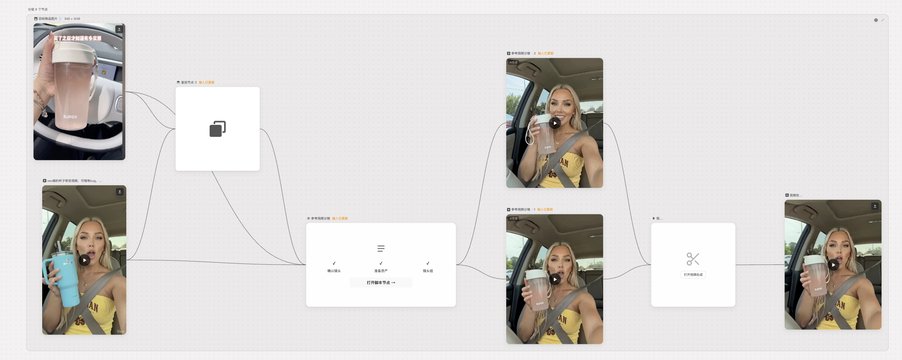
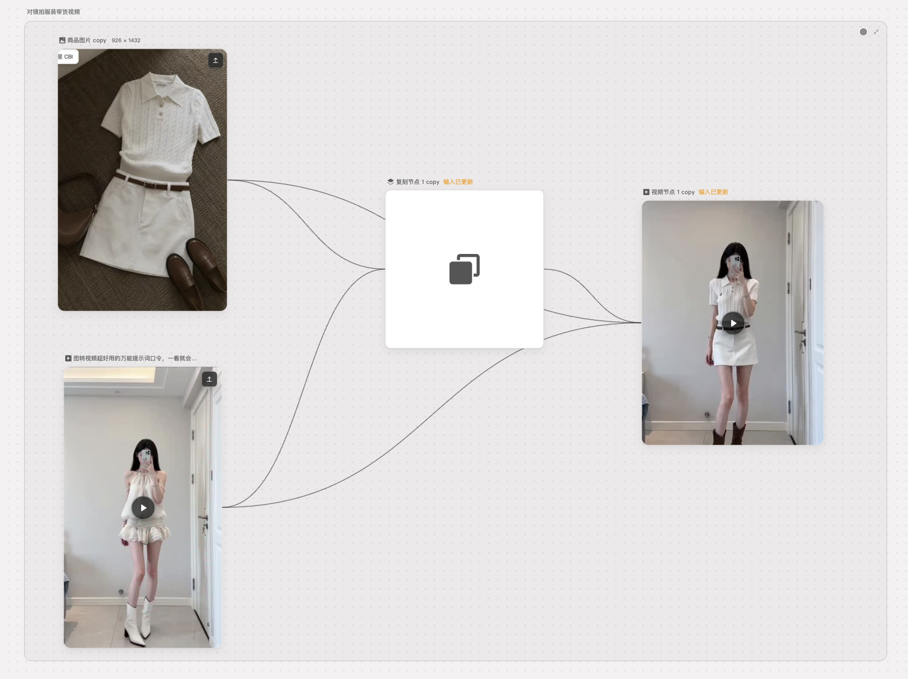
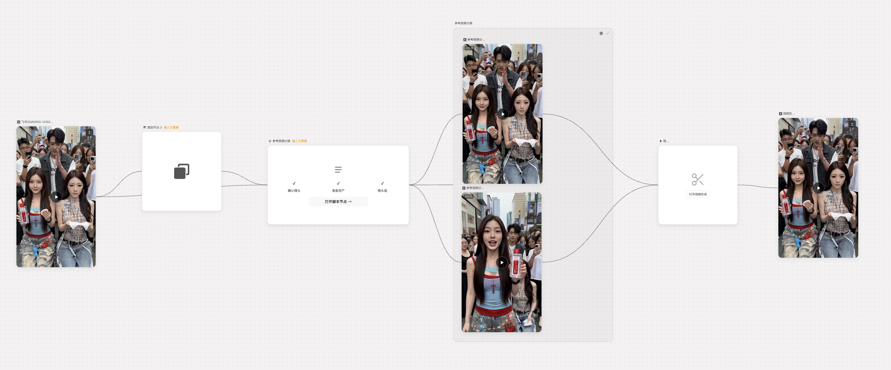

从参考视频到新素材
先提供参考视频与目标商品图，再将镜头和内容拆入画布，生成候选片段，最后组合成一条新视频。下面保留了输入与输出，方便直接对照。

让商品进入已有镜头
一组更聚焦的示例：以商品图片和人物参考视频作为输入，在保留镜头结构的同时生成服装替换后的片段。

一种画布，多种创作路径
同样的节点式组织方式，可以组合图片、角色素材、文字和视频节点。以下是三个不同方向的演示，展示画布的创作范围，而不是线上投放效果。
同一条视频的跨境适配
将参考视频拆成可处理的镜头，分别生成候选内容，再回到合成节点。前后片段展示了人物与商品表达的变化。

我的工作
从 0 到 1 负责创作画布的架构与交付，连接前端交互、服务端和模型能力，并推进需求迭代。本页素材对应创作侧的演示；广告投放侧未包含在这组素材中。
- 画布与交互
- 组织节点、素材引用与创作流程，让不同输入和生成结果能在一张画布中继续编辑。
- 生成链路
- 联动服务端与模型能力，支撑图片、视频和素材复刻等创作任务的交付。
- 产研推进
- 拆解需求、确定方案并协同团队持续迭代，以可操作的 demo 验证创作场景。